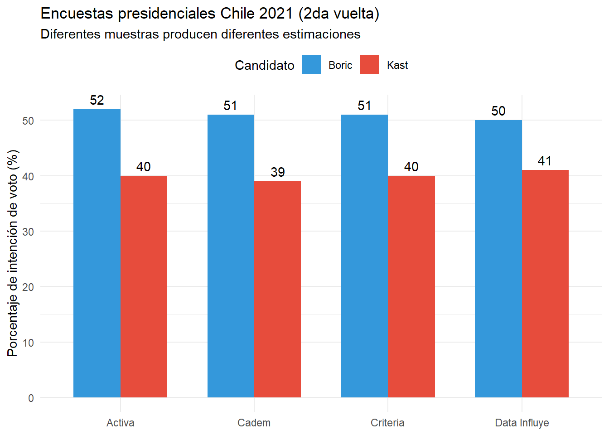
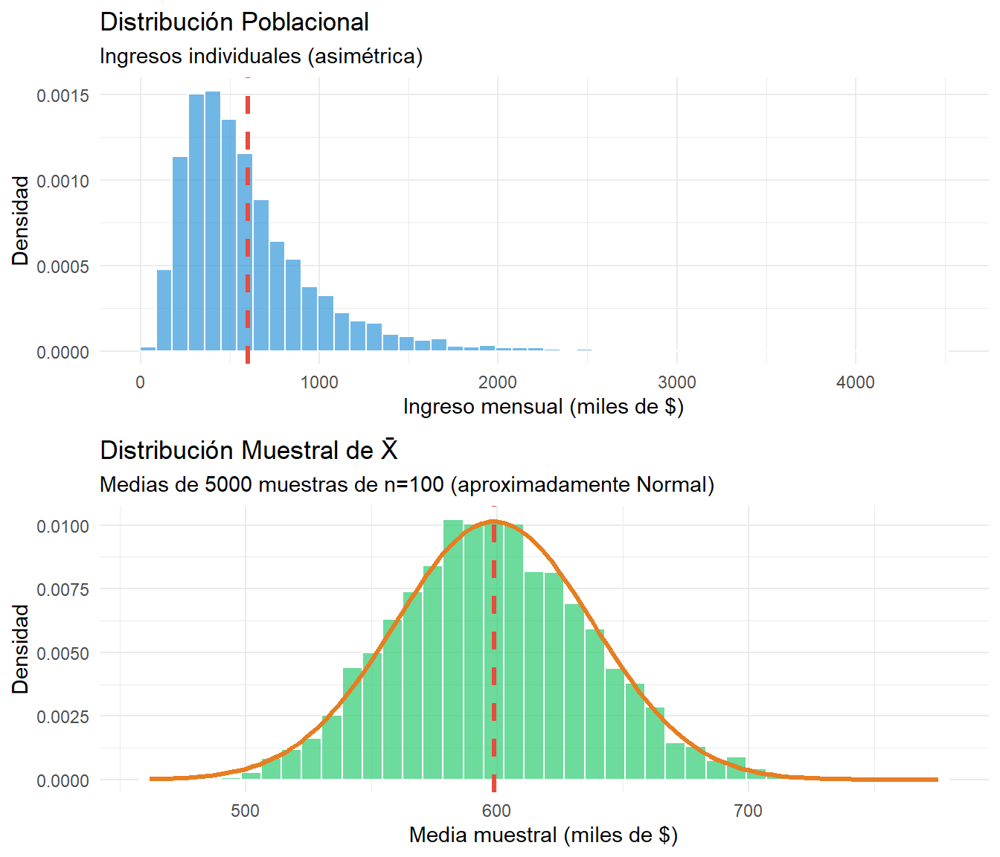
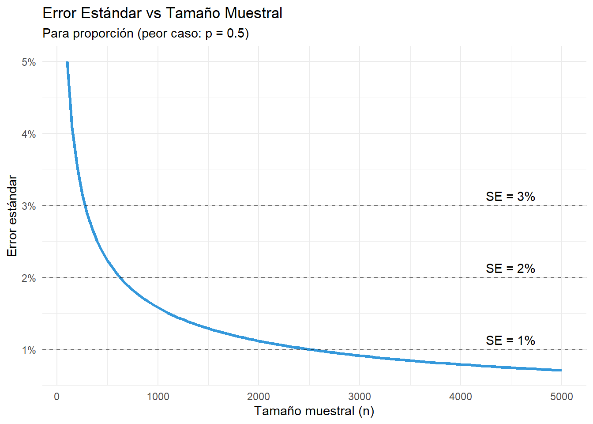
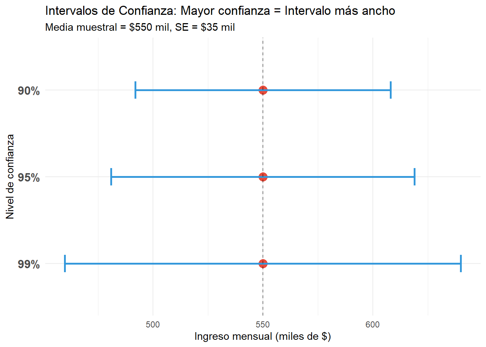
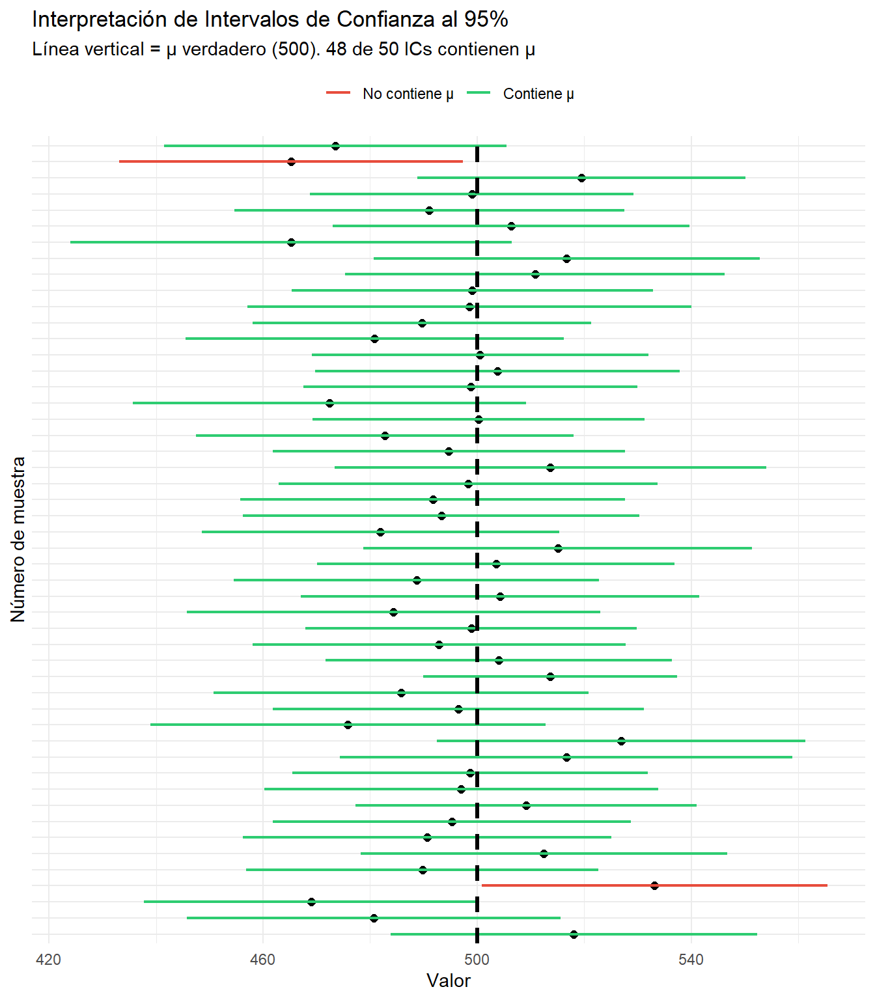

8 Inferencia estadística
Objetivos del capítulo
Al finalizar este capítulo, serás capaz de:
- Comprender la lógica de la inferencia estadística: generalizar desde muestras a poblaciones
- Distinguir entre parámetros poblacionales y estadísticos muestrales
- Entender el concepto de distribución muestral y su relación con el Teorema del Límite Central
- Calcular e interpretar el error estándar
- Construir e interpretar intervalos de confianza para medias y proporciones
- Evaluar el tamaño muestral necesario para cierto nivel de precisión
8.1 De muestras a poblaciones
En ciencias sociales raramente tenemos acceso a poblaciones completas. Queremos saber:
- ¿Cuál es el apoyo real a la reforma de pensiones entre todos los chilenos?
- ¿Cuál es el ingreso promedio de hogares en América Latina?
- ¿Qué proporción de electores cambia su voto entre elecciones?
Pero solo podemos encuestar una muestra de cientos o miles de personas, no los millones que componen la población. La inferencia estadística es el proceso de usar datos de una muestra para hacer afirmaciones sobre una población, cuantificando la incertidumbre asociada.
8.1.0.1 Ejemplo motivador: Encuestas electorales en Chile
Antes de las elecciones presidenciales 2021 (segunda vuelta), múltiples encuestadoras reportaron:
Preguntas clave:
- ¿Por qué las encuestas difieren si todas miden “lo mismo”?
- ¿Cuán confiables son estos números?
- ¿Qué tan grande debe ser la muestra?
La inferencia estadística nos da herramientas para responder estas preguntas.
8.1.0.2 Muestras y poblaciones
8.1.0.3 Definiciones fundamentales
Población: Conjunto completo de unidades de interés. Tiene parámetros (valores fijos, generalmente desconocidos): - Media poblacional: \(\mu\) - Proporción poblacional: \(p\) - Varianza poblacional: \(\sigma^2\)
Muestra: Subconjunto de la población que observamos. Tiene estadísticos (valores calculados a partir de los datos): - Media muestral: \(\bar{x}\) - Proporción muestral: \(\hat{p}\) - Varianza muestral: \(s^2\)
Es fundamental distinguir que los parámetros \((\mu, p, \sigma^2)\) son valores fijos (pero desconocidos) de la población, mientras que los estadísticos \((\bar{x}, \hat{p}, s^2)\) son calculados a partir de la muestra y varían entre muestras. Usamos estadísticos para estimar parámetros.
Por ejemplo, consideremos el apoyo a una reforma tributaria. La población son 15 millones de votantes chilenos, y el parámetro de interés es \(p\) = proporción que apoya la reforma (desconocida). Si tomamos una muestra de 1,200 votantes encuestados y observamos el estadístico \(\hat{p} = 0.42\) (42% de la muestra apoya), la pregunta inferencial es: ¿Qué podemos decir sobre \(p\) (desconocido) a partir de \(\hat{p} = 0.42\) (conocido)?
8.1.0.4 Muestreo aleatorio simple
Para que la inferencia sea válida, necesitamos muestras probabilísticas. El diseño más simple:
Muestreo Aleatorio Simple (MAS): Cada unidad de la población tiene la misma probabilidad de ser seleccionada.
# Simulación de población y muestra
set.seed(2024)
# Población de 10,000 votantes (40% apoya reforma)
poblacion <- c(rep(1, 4000), rep(0, 6000)) # 1 = apoya, 0 = no apoya
p_verdadero <- mean(poblacion)
cat("Parámetro poblacional verdadero: p =", p_verdadero, "\n\n")Parámetro poblacional verdadero: p = 0.4 # Tomamos una muestra aleatoria de n=1000
muestra <- sample(poblacion, size = 1000, replace = FALSE)
p_hat <- mean(muestra)
cat("Estadístico muestral: p̂ =", p_hat, "\n")Estadístico muestral: p̂ = 0.418 cat("Error de estimación: p̂ - p =", p_hat - p_verdadero, "\n")Error de estimación: p̂ - p = 0.018 Propiedades del MAS:
- Insesgado: En promedio, \(E(\hat{p}) = p\) y \(E(\bar{x}) = \mu\)
- Variable: Diferentes muestras producen diferentes estimaciones
- Más preciso con muestras grandes: El error disminuye con \(n\)
8.2 Distribuciones muestrales
La clave para entender la inferencia es reconocer que los estadísticos son variables aleatorias.
8.2.0.1 Distribución muestral de la media
Si tomamos muchas muestras de tamaño \(n\) y calculamos \(\bar{x}\) para cada una, la distribución de todos esos \(\bar{x}\) es la distribución muestral de la media.
Propiedades (del Teorema del Límite Central, visto en Cap. 7):
\[\bar{X} \sim N\left(\mu, \frac{\sigma^2}{n}\right)\]
- Media: \(E(\bar{X}) = \mu\) (insesgado)
- Varianza: \(\text{Var}(\bar{X}) = \frac{\sigma^2}{n}\) (disminuye con \(n\))
- Forma: Aproximadamente Normal para \(n \geq 30\)
# Población: Ingresos mensuales (en miles de pesos)
# Distribución asimétrica (lognormal)
set.seed(123)
poblacion_ingresos <- rlnorm(100000, meanlog = log(500), sdlog = 0.6)
mu_real <- mean(poblacion_ingresos)
sigma_real <- sd(poblacion_ingresos)
cat("Población:\n")Población:cat("Media (μ) =", round(mu_real, 1), "mil pesos\n")Media (μ) = 598.8 mil pesoscat("SD (σ) =", round(sigma_real, 1), "mil pesos\n\n")SD (σ) = 393.1 mil pesos# Tomamos 5000 muestras de n=100 y calculamos sus medias
n_muestra <- 100
medias_muestrales <- replicate(5000, mean(sample(poblacion_ingresos, n_muestra)))
cat("Distribución muestral de X̄ (n=100):\n")Distribución muestral de X̄ (n=100):cat("Media =", round(mean(medias_muestrales), 1), " (muy cerca de μ =", round(mu_real, 1), ")\n")Media = 598.9 (muy cerca de μ = 598.8 )cat("SD observada =", round(sd(medias_muestrales), 1), "\n")SD observada = 39.3 cat("SD teórica (σ/√n) =", round(sigma_real/sqrt(n_muestra), 1), "\n")SD teórica (σ/√n) = 39.3 
Aunque la población de ingresos es altamente asimétrica, la distribución de \(\bar{X}\) es aproximadamente Normal. Esto es el Teorema del Límite Central en acción.
8.2.0.2 Distribución muestral de la proporción
Para proporciones, una lógica similar aplica. Si \(\hat{p}\) es la proporción muestral:
\[\hat{p} \sim N\left(p, \frac{p(1-p)}{n}\right)\]
(Aproximación válida cuando \(np \geq 10\) y \(n(1-p) \geq 10\))
Por ejemplo, si en una encuesta electoral el verdadero apoyo es \(p = 0.45\) y encuestamos \(n = 1000\) personas:
p <- 0.45
n <- 1000
# Media y SD de p̂
media_p_hat <- p
sd_p_hat <- sqrt(p * (1 - p) / n)
cat("Distribución de p̂:\n")Distribución de p̂:cat("Media =", media_p_hat, "\n")Media = 0.45 cat("SD (error estándar) =", round(sd_p_hat, 4), "\n\n")SD (error estándar) = 0.0157 # Probabilidad de que nuestra muestra subestime apoyo en >3%
prob_error_grande <- pnorm(0.42, mean = p, sd = sd_p_hat)
cat("P(p̂ < 0.42) =", round(prob_error_grande, 3))P(p̂ < 0.42) = 0.0288.2.0.3 Error estándar
El error estándar (SE, standard error) es la desviación estándar de la distribución muestral de un estadístico.
8.2.0.4 Error estándar de la media
\[\text{SE}(\bar{x}) = \frac{\sigma}{\sqrt{n}}\]
Pero \(\sigma\) (SD poblacional) es generalmente desconocido. Lo estimamos con \(s\) (SD muestral):
\[\widehat{\text{SE}}(\bar{x}) = \frac{s}{\sqrt{n}}\]
Es importante distinguir entre error estándar y desviación estándar. La desviación estándar (\(s\)) mide variabilidad en los datos, mientras que el error estándar (\(\text{SE}\)) mide variabilidad del estadístico (precisión de la estimación). El \(\text{SE}\) disminuye con \(n\); \(s\) NO (permanece constante en promedio).1
1 El error estándar mide qué tan precisa es nuestra estimación de la media. La desviación estándar mide qué tan dispersos están los datos individuales. \(\text{SE} = s/\sqrt{n}\) siempre es menor que \(s\) (excepto cuando \(n=1\)).
Por ejemplo, consideremos datos de ingreso familiar en una encuesta tipo CASEN:
# Datos simulados de ingresos (en miles de $)
set.seed(456)
ingresos <- rlnorm(500, meanlog = log(600), sdlog = 0.7)
n <- length(ingresos)
media <- mean(ingresos)
s <- sd(ingresos)
se <- s / sqrt(n)
cat("Muestra de n =", n, "hogares\n")Muestra de n = 500 hogarescat("Media muestral: $", round(media, 0), " mil\n", sep = "")Media muestral: $810 milcat("SD de ingresos (s): $", round(s, 0), " mil\n", sep = "")SD de ingresos (s): $606 milcat("SE de la media: $", round(se, 0), " mil\n\n", sep = "")SE de la media: $27 milcat("Interpretación:\n")Interpretación:cat("- Los ingresos individuales varían típicamente ±$", round(s, 0),
" mil alrededor de la media\n", sep = "")- Los ingresos individuales varían típicamente ±$606 mil alrededor de la mediacat("- Nuestra estimación de la media tiene error típico de ±$", round(se, 0),
" mil\n", sep = "")- Nuestra estimación de la media tiene error típico de ±$27 mil8.2.0.5 Error estándar de la proporción
\[\text{SE}(\hat{p}) = \sqrt{\frac{p(1-p)}{n}}\]
Como \(p\) es desconocido, lo estimamos con \(\hat{p}\):
\[\widehat{\text{SE}}(\hat{p}) = \sqrt{\frac{\hat{p}(1-\hat{p})}{n}}\]
# Encuesta: proporción que apoya política X
n <- 1200
apoyos <- 510
p_hat <- apoyos / n
se_p <- sqrt(p_hat * (1 - p_hat) / n)
cat("n =", n, "encuestados\n")n = 1200 encuestadoscat("Apoyan =", apoyos, "(", round(p_hat * 100, 1), "%)\n", sep = "")Apoyan =510(42.5%)cat("SE(p̂) =", round(se_p, 4), "o", round(se_p * 100, 2), "puntos porcentuales\n")SE(p̂) = 0.0143 o 1.43 puntos porcentuales8.2.0.6 El error estándar disminuye con \(\sqrt{n}\)
Una implicación crucial: para reducir el SE a la mitad, necesitas cuadruplicar el tamaño muestral.

8.3 Intervalos de confianza
Un intervalo de confianza (IC) es un rango de valores plausibles para el parámetro poblacional, construido de tal manera que, si repitiéramos el muestreo infinitas veces, el IC contendría el valor verdadero en (por ejemplo) 95% de las muestras.
8.3.0.1 Intervalo de confianza para la media
Fórmula general:
\[\text{IC}_{95\%} = \bar{x} \pm t_{n-1, 0.975} \cdot \frac{s}{\sqrt{n}}\]
donde \(t_{n-1, 0.975}\) es el valor crítico de la distribución \(t\) con \(n-1\) grados de libertad.
Cuando \(n\) es grande (\(n \geq 30\)), \(t \approx 1.96\), así que:
\[\text{IC}_{95\%} \approx \bar{x} \pm 1.96 \cdot \text{SE}(\bar{x})\]
AdvertenciaError común: Interpretación incorrecta del IC
INCORRECTO: “Hay 95% de probabilidad de que \(\mu\) esté en este intervalo.”
CORRECTO: “Si repitiéramos este proceso de muestreo muchas veces, aproximadamente 95% de los intervalos construidos contendrían el verdadero valor de \(\mu\).”
La diferencia es sutil pero importante: \(\mu\) es un valor fijo (aunque desconocido). No es aleatorio. Lo que varía entre muestras es el intervalo, no el parámetro.
Por ejemplo, consideremos el cálculo de un intervalo de confianza para el ingreso promedio:
# Datos de ingresos (retomando ejemplo anterior)
set.seed(789)
ingresos <- rlnorm(200, meanlog = log(550), sdlog = 0.65)
n <- length(ingresos)
media <- mean(ingresos)
s <- sd(ingresos)
se <- s / sqrt(n)
# Valor crítico t para 95% de confianza
t_crit <- qt(0.975, df = n - 1)
# Intervalo de confianza
ic_inferior <- media - t_crit * se
ic_superior <- media + t_crit * se
cat("Ingreso promedio mensual (n =", n, "hogares):\n")Ingreso promedio mensual (n = 200 hogares):cat("Media muestral: $", round(media, 0), " mil\n", sep = "")Media muestral: $653 milcat("IC 95%: [$", round(ic_inferior, 0), ", $",
round(ic_superior, 0), "] mil\n\n", sep = "")IC 95%: [$588, $719] milcat("Interpretación: Estamos 95% confiados de que el ingreso promedio\n")Interpretación: Estamos 95% confiados de que el ingreso promediocat("poblacional está entre $", round(ic_inferior, 0), " y $",
round(ic_superior, 0), " mil.\n", sep = "")poblacional está entre $588 y $719 mil.
TipForma rápida en R:
t.test()
En lugar de calcular manualmente, puedes usar la función t.test():
# Usando los mismos datos de ingresos
resultado <- t.test(ingresos, conf.level = 0.95)
# Ver el intervalo de confianza
resultado$conf.int[1] 587.9537 718.5166
attr(,"conf.level")
[1] 0.95# Ver todos los resultados
resultado
One Sample t-test
data: ingresos
t = 19.732, df = 199, p-value < 2.2e-16
alternative hypothesis: true mean is not equal to 0
95 percent confidence interval:
587.9537 718.5166
sample estimates:
mean of x
653.2351 La función t.test() calcula automáticamente el IC y además realiza una prueba de hipótesis (que veremos en el próximo capítulo).
8.3.0.2 Intervalo de confianza para la proporción
\[\text{IC}_{95\%} = \hat{p} \pm 1.96 \cdot \sqrt{\frac{\hat{p}(1-\hat{p})}{n}}\]
(Válido cuando \(n\hat{p} \geq 10\) y \(n(1-\hat{p}) \geq 10\))
Por ejemplo, para una encuesta de intención de voto:
# Encuesta: ¿Votará en próximas elecciones?
n <- 1500
votaran <- 780
p_hat <- votaran / n
se_p <- sqrt(p_hat * (1 - p_hat) / n)
# IC 95%
ic_inf <- p_hat - 1.96 * se_p
ic_sup <- p_hat + 1.96 * se_p
cat("Encuesta (n =", n, "):\n")Encuesta (n = 1500 ):cat("Declaran que votarán:", votaran, "personas (", round(p_hat * 100, 1), "%)\n", sep = "")Declaran que votarán:780personas (52%)cat("IC 95%: [", round(ic_inf * 100, 1), "%, ",
round(ic_sup * 100, 1), "%]\n\n", sep = "")IC 95%: [49.5%, 54.5%]cat("Interpretación: El verdadero porcentaje de personas que votarán\n")Interpretación: El verdadero porcentaje de personas que votaráncat("está probablemente entre", round(ic_inf * 100, 1), "% y",
round(ic_sup * 100, 1), "%.\n")está probablemente entre 49.5 % y 54.5 %.
TipIC para proporciones en R:
prop.test()
# Forma directa con prop.test()
prop.test(x = 780, n = 1500, conf.level = 0.95)
1-sample proportions test with continuity correction
data: 780 out of 1500, null probability 0.5
X-squared = 2.3207, df = 1, p-value = 0.1277
alternative hypothesis: true p is not equal to 0.5
95 percent confidence interval:
0.4943652 0.5455312
sample estimates:
p
0.52 Nota: prop.test() usa una corrección de continuidad por defecto. Para obtener el IC “clásico”, usa correct = FALSE.
8.3.0.3 Niveles de confianza alternativos
No estamos limitados a 95%. Podemos construir ICs con cualquier nivel de confianza:
| Nivel de Confianza | Valor Crítico \(z\) | Intervalo |
|---|---|---|
| 90% | 1.645 | \(\bar{x} \pm 1.645 \cdot \text{SE}\) |
| 95% | 1.960 | \(\bar{x} \pm 1.960 \cdot \text{SE}\) |
| 99% | 2.576 | \(\bar{x} \pm 2.576 \cdot \text{SE}\) |
Relación inversa: Mayor confianza → Intervalo más ancho
# Ejemplo con ingreso promedio
media <- 550
se <- 35
niveles <- c(0.90, 0.95, 0.99)
z_valores <- qnorm(1 - (1 - niveles)/2)
resultados <- data.frame(
nivel = paste0(niveles * 100, "%"),
z = round(z_valores, 3),
inferior = round(media - z_valores * se, 0),
superior = round(media + z_valores * se, 0)
)
resultados$ancho <- resultados$superior - resultados$inferior
print(resultados) nivel z inferior superior ancho
1 90% 1.645 492 608 116
2 95% 1.960 481 619 138
3 99% 2.576 460 640 180
8.3.0.4 Tabla de referencia: Tamaño muestral para proporciones
| Margen error | 90% | 95% | 99% |
|---|---|---|---|
| ±1% | 6764 | 9604 | 16588 |
| ±2% | 1691 | 2401 | 4147 |
| ±3% | 752 | 1068 | 1844 |
| ±4% | 423 | 601 | 1037 |
| ±5% | 271 | 385 | 664 |
| ±10% | 68 | 97 | 166 |
:::
8.3.0.5 Simulación de ICs
Demostremos con simulación qué significa “95% de confianza”:
# Parámetros poblacionales conocidos (para la simulación)
mu_real <- 500
sigma_real <- 120
n <- 50
# Tomamos 100 muestras y calculamos IC para cada una
set.seed(2025)
n_simulaciones <- 100
resultados_sim <- data.frame(
muestra = 1:n_simulaciones,
media = numeric(n_simulaciones),
ic_inf = numeric(n_simulaciones),
ic_sup = numeric(n_simulaciones)
)
for (i in 1:n_simulaciones) {
muestra <- rnorm(n, mean = mu_real, sd = sigma_real)
media <- mean(muestra)
se <- sd(muestra) / sqrt(n)
t_crit <- qt(0.975, df = n - 1)
resultados_sim$media[i] <- media
resultados_sim$ic_inf[i] <- media - t_crit * se
resultados_sim$ic_sup[i] <- media + t_crit * se
}
# ¿Cuántos ICs contienen μ?
resultados_sim$contiene_mu <- (resultados_sim$ic_inf <= mu_real &
resultados_sim$ic_sup >= mu_real)
prop_contiene <- mean(resultados_sim$contiene_mu)
cat("De", n_simulaciones, "intervalos de confianza al 95%:\n")De 100 intervalos de confianza al 95%:cat(sum(resultados_sim$contiene_mu), "contienen el verdadero valor μ =", mu_real, "\n")93 contienen el verdadero valor μ = 500 cat("Proporción:", round(prop_contiene, 3), "\n")Proporción: 0.93 cat("(Esperábamos ~0.95)\n")(Esperábamos ~0.95)
Mensaje clave: El “95%” NO se refiere a una muestra individual, sino al procedimiento. Si lo repitiéramos infinitas veces, 95% de los intervalos contendrían \(\mu\). Para cualquier muestra específica, o contiene \(\mu\) o no (pero no sabemos cuál).
Resumen
Conceptos clave:
- Inferencia estadística: Usar muestras para hacer afirmaciones sobre poblaciones
- Parámetros vs estadísticos: \(\mu, p\) (poblacionales, fijos, desconocidos) vs \(\bar{x}, \hat{p}\) (muestrales, variables, observables)
- Distribución muestral: Distribución de un estadístico a través de todas las muestras posibles
- Error estándar: SD de la distribución muestral; mide precisión de la estimación; \(\text{SE} = s/\sqrt{n}\)
- Intervalos de confianza: Rango plausible para el parámetro; nivel de confianza se refiere al procedimiento, no a un intervalo específico
- Tamaño muestral: Determinar \(n\) necesario para lograr margen de error deseado
Fórmulas esenciales:
| Concepto | Media | Proporción |
|---|---|---|
| Error estándar | \(\text{SE} = s/\sqrt{n}\) | \(\text{SE} = \sqrt{\hat{p}(1-\hat{p})/n}\) |
| IC 95% | \(\bar{x} \pm 1.96 \cdot \text{SE}\) | \(\hat{p} \pm 1.96 \cdot \text{SE}\) |
| Tamaño muestral | \(n = (z\sigma/E)^2\) | \(n = (z/E)^2 \cdot 0.25\) |
Conexión con próximos capítulos:
- Cap. 9 extenderá la lógica de inferencia a pruebas de hipótesis
- Caps. 10-11 aplicarán ICs y pruebas para comparar grupos y analizar relaciones
Lecturas recomendadas
Fundamentos de inferencia estadística:
Agresti, A., & Finlay, B. (2009). Statistical Methods for the Social Sciences (4th ed.). Pearson.
→ Capítulo 5 cubre estimación estadística, intervalos de confianza y error estándar con claridad ejemplar.
Aplicaciones en análisis de datos sociales:
Llaudet, E., & Imai, K. (2022). Data Analysis for Social Science: A Friendly and Practical Introduction. Princeton University Press.
→ Capítulo 7 sobre incertidumbre conecta teoría con aplicaciones prácticas en investigación cuantitativa.
Recurso complementario de acceso libre:
Diez, D., Barr, C., & Çetinkaya-Rundel, M. (2019). OpenIntro Statistics (4th ed.). [Disponible gratis en https://www.openintro.org/book/os/]
→ Capítulo 4 sobre fundamentos de inferencia, con ejercicios y ejemplos interactivos.
Ejercicios
Los ejercicios para este capítulo se encuentran en el Anexo de Ejercicios.